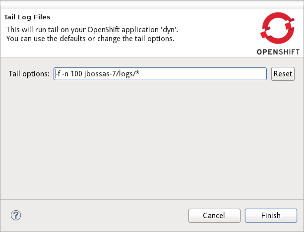

<LiveReload Webservices Tools >
Tail Log Files |
|
| OpenShift Java client |
When looking at the log files in your OpenShift application the tooling allows you to provide your very own settings.
In Alpha2 we now store these personalized options on a per-application basis. This frees you from re-providing them.
 |